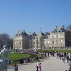

Travel Points
If you think that the Eiffel Tower is the best among the Paris attractions that you will get to see once you pay the city a visit, think again. Although this towering structure has become the national symbol of France to the rest of the world, there’s more to this dazzling city than meets the eye.
First visits to Paris can be daunting: nearly every square inch of the city seems to be seeping with history and beauty. All of it is worth seeing and exploring, but there are some Paris tourist attractions that simply shouldn't be missed.


Paris is known for its many elegant parks, but the city boasts a large number of very diverse parks. While some date back to the 17th century, many modern parks have been created in the last couple of decades. Even though Paris has a dense urban structure, the city boasts more than 400 parks.
PARKS AND SQUARES
Paris is known for its many elegant parks, but the city boasts a large number of very diverse parks. While some date back to the 17th century, many modern parks have been created in the last couple of decades. Even though Paris has a dense urban structure, the city boasts more than 400 parks.